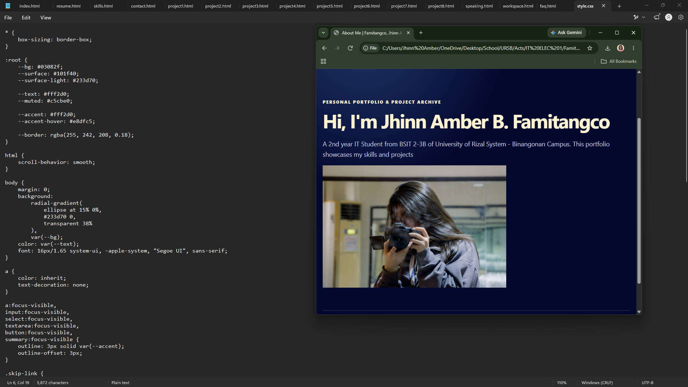

Challenge
I had to make 15 webpages all by myself, and it confused my a lot
PERSONAL PORTFOLIO & PROJECT ARCHIVE
This website itself is one of my latest works for my Finals Project
I had to make 15 webpages all by myself, and it confused my a lot

This website is the outcome hehe
What I used: Notepad for HTML and CSS, Github.io to host the website